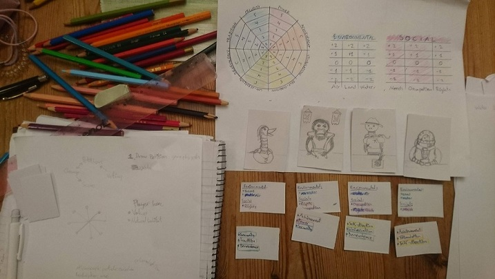
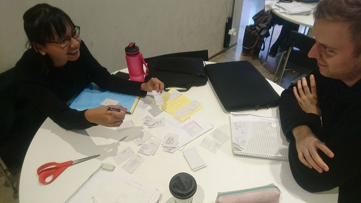

Frontier
A co-located multiplayer game about managing a planet's resources.
What is it?
Frontier is a co-located social game about managing resources, built on with the Angular JS framework and PubNub API. Frontier is played on a shared screen as well as each player's personal screens. Through a web browser the user can start the game on their computer and the players can join via their phone or tablet. Frontier is all about balancing your species personal needs with the needs of a planet. Resources give you points, but use too much of them and the planet will suffer!

Paralell prototyping of the concepts behind the game.

Discussing the rules of the game.